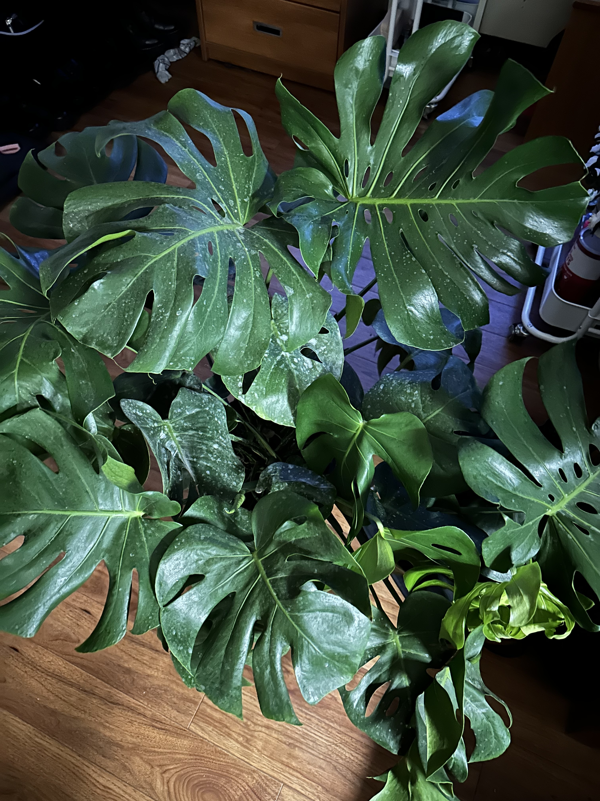

Blog Entry - New Plant!
Kaylin B. Chin
On September 23, after over a year of actively searching I was finally able to find and purchase a Monstera! This is a Monstera Deliciosa, which is a tropical plant native to the tropical forests of southern Mexico. These plants are known for their beautiful large split leaves and rare variegated varieties. I was able to bring this plant home from a nursery called Lansing Gardens, and I was even able to get a student discount! I started my gardening journey with a pothos plant that miraculously survived the cold winter in a dorm room! I love getting house plants while living in a dorm because I don’t have to worry about them being pet-safe! I have a very nosy dog, who also loves to eat things he is not supposed to be eating. I love watching my plants grow and flourish with care and attention! I love to see the start of new leaves that have yet to unfurl! Plants can be a very rewarding experience as long as you take care of them properly, and be sure to do the proper amount of research before purchasing a new plant! Always remember to not over or under water, and keep an eye on the temperature!
| Date | Milestone | Growth |
|---|---|---|
| 9/23 | Purchased | 1 new furled leaf growth |
| 9/30 | Repotted terracotta pot | 4 additional small new leaf growths |
| 10/7 | pruned browning leaves | 2 unfurling leaves |